The Captains Report mobile edition — the same monthly
report, reformatted for easier reading on smaller screens.
SEPTEMBER 2026
SEASON 21 SETS SAIL
Season 21 arrives September 17 with new rewards, recurring events and another major sandbox experiment
A NEW SEASON BEGINS
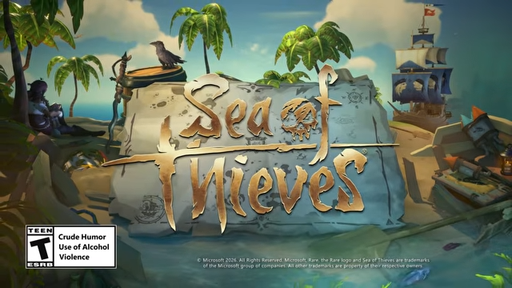
Season 21 arrives September 17, and this one is going to look a little different.
Rather than launching alongside one massive new feature, Rare is putting more attention on the world that is already there.
Recurring Live Events will play a bigger role throughout the Season, Custom Seas will continue to expand, and a major experiment will try to get crews spending more time sailing across the shared world.
The Season Pass isn't going anywhere. A new free reward track arrives with another Star Prize waiting at level 50, while the Premium Tier brings the new “Mutiny's Mark” collection.
Outpost shops are also getting some much-needed attention, with new cosmetics arriving for players to earn and purchase with gold. The Pirate Emporium will still receive new stock, including the returning “Bleakheart Groom”, but Rare says a larger change to its cosmetic strategy is on the way.
The biggest change, however, may be what Season 21 takes away. Diving to Voyages, Tall Tales and Raids will be disabled as Rare tests whether keeping crews on the same server for longer can bring more life back to the sandbox.
SEASON 21 AT A GLANCE
SEPTEMBER 17th
Season 21 begins
NO DIVING
Voyages, Tall Tales and Raids will REQUIRE sailing
NO HEADLINE FEATURE
Major features are no longer tied to Season launches
PORTAL HOPPING
Changing servers will reset your Emissary Grade
NEW REWARDS
A new Season Pass and Premium Tier arrive
MORE LIVE EVENTS
Recurring events take a bigger role throughout the Season
NO MORE EASY ESCAPE
Rare expands its Season 21 experiments to include Portal Hopping
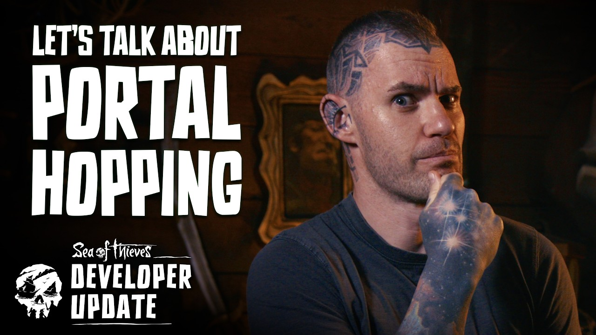
In the latest Sea of Thieves Developer Update, Production Director Drew Stevens discusses a major change to portal hopping coming with Season 21. Crews will still be able to use the Sea of the Damned to move between servers, but they will no longer be able to carry their Emissary Grade with them.
The change will be especially noticeable for Grade Five Reapers, who could previously portal hop while keeping their Grade and immediately begin hunting Emissaries on the new server.
Stevens explained that this works with Rare's goal of making each server feel like its own “living story.” The team wants crews to see threats developing around them and have time to react, rather than having a fully established Reaper suddenly arrive from another server.
Rare acknowledges that the change won't appeal to everyone, but believes crews should build their reputation and influence on the seas they're currently sailing.
MUSIC OF THE MONTH
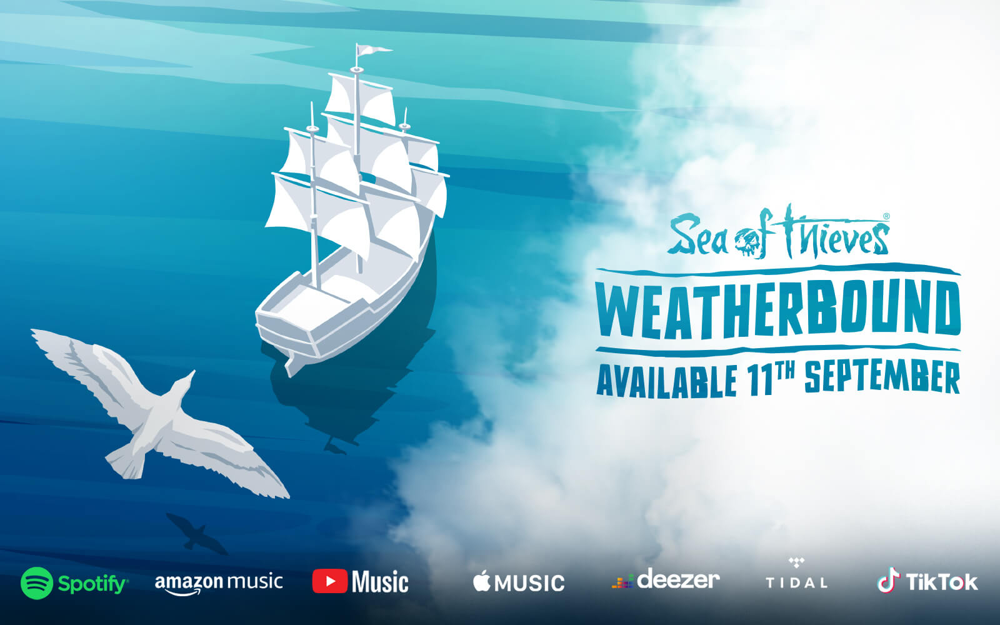
Arriving alongside Season 21 is a brand-new track from the Sea of Thieves Audio Team. “Weatherbound” can already be heard accompanying the Season 21 title screen, bringing a new sound to the start of the latest Season.
The track officially releases on September 11 across music streaming platforms, giving pirates a chance to take the sounds of Season 21 with them beyond the seas.
TWITCH DROPS
NEW REWARDS ARRIVE SEPTEMBER 18–23
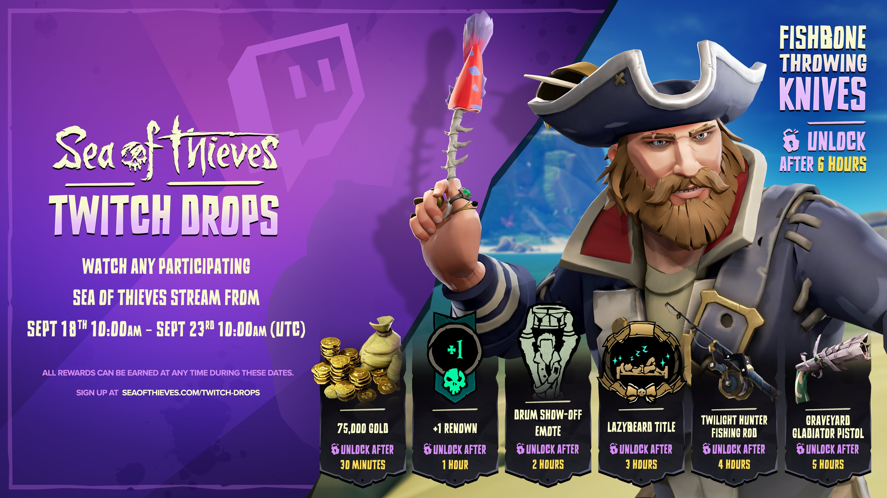
Twitch Drops return this month with another set of rewards for pirates tuning in to participating Sea of Thieves streamers.
From September 18 through September 23, players can earn Gold and Renown, along with the Drum Show-Off Emote, Lazybeard Title, Twilight Hunter Fishing Rod and Graveyard Gladiator Pistol.
Those who stick around for the full six hours can also claim the new and exclusive Fishbone Throwing Knives.
Make sure your Sea of Thieves and Twitch accounts are linked before watching to earn the rewards.
GOLDEN SANDS RETURNS
Fan-favorite Outpost wins the community vote and is heading to Custom Seas
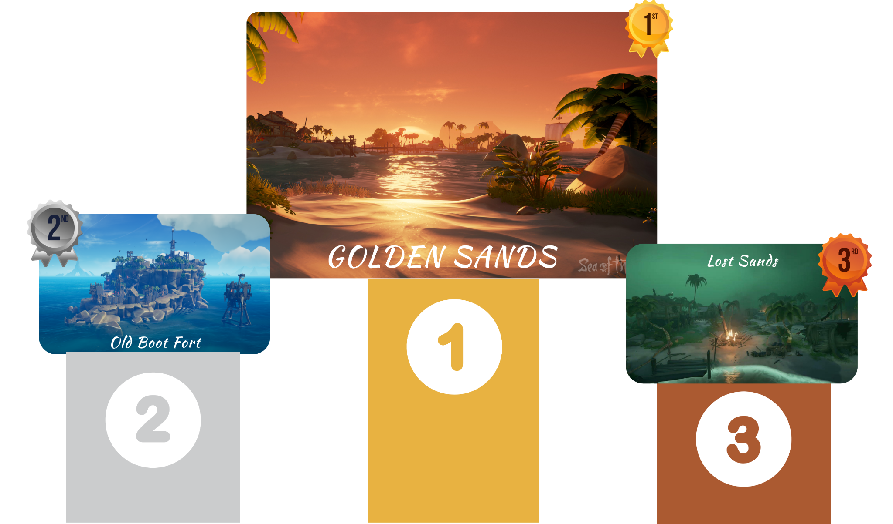
The votes are in, and Golden Sands has won by a landslide. Production Director Drew Stevens revealed the results of the Legendary Location community vote during September's Sea of Thieves Developer Update, confirming that the original Golden Sands Outpost will be the next classic location rebuilt for Custom Seas.
The original Golden Sands Outpost, as it existed before its transformation into Port Merrick, will now be restored as the next Legendary Location for Custom Seas. Rare will be digging back through its archives to rebuild the classic Outpost and prepare it for use within Custom Seas.
Stevens was quick to note, however, that these old locations aren't simply “sitting on a shelf ready to go.” Bringing Golden Sands back will require the team to restore the location, set it up for Custom Seas, polish it and put it through testing before players can return.
Old Boot Fort, which finished second in the vote, and Lost Sands, which came in third, aren't being forgotten either. Rare plans to bring both to Custom Seas after Golden Sands, working through the locations in the order decided by the community.
For now, there's no release date for Golden Sands. Rare says each location will arrive when it's ready.
BUGS GO PUBLIC
Rare trials a new way for players to report and prioritize problems
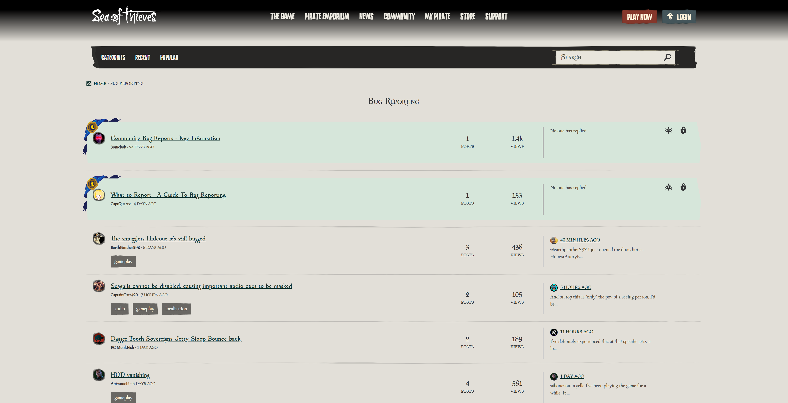
Reporting a troublesome bug is about to become a much more public affair. Rare has opened a new Bug Reporting section on the official Sea of Thieves Forums, giving players a place to raise issues publicly while allowing the community to add information and upvote the problems affecting them most.
The announcement follows a recent bug bash by the Game Health team, which Stevens said has already tackled a number of commonly reported problems. These include the elusive “Mast bug”, inconsistent barrel inventories, Ancient Megalodons failing to release rewards, stingy Merchants, and several issues that can appear after migrating between servers.
Rare is treating the new reporting system as a trial, rather than a permanent replacement from day one. The team will watch how the system is used and see whether giving the community a more public role helps identify the problems that need attention most.
A NEW LOOK AT COSMETICS
Rare responds to player feedback with changes to how cosmetics are released
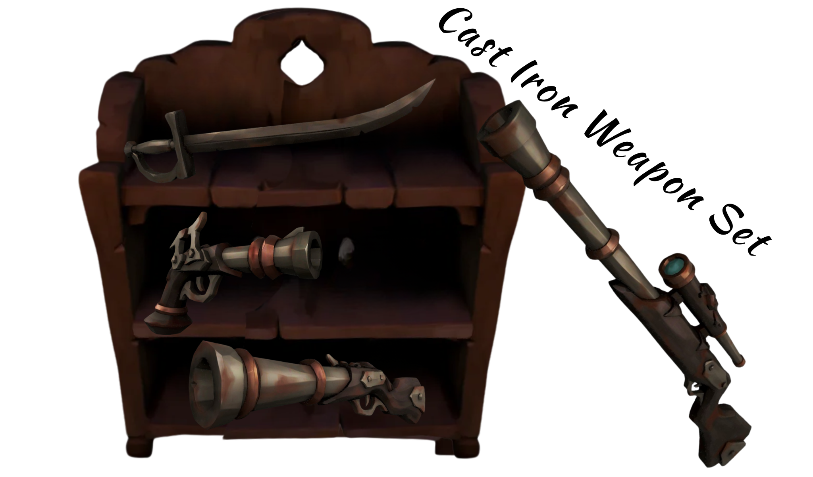
Rare has heard the complaints surrounding the Pirate Emporium, and changes are on the way. During September's Developer Update, Production Director Drew Stevens addressed the growing imbalance between cosmetics sold through the Emporium and those players can earn or purchase while actually playing the game.
Stevens explained that the Pirate Emporium remains an important part of funding the continued development of Sea of Thieves, now in its ninth year, and isn't going anywhere. However, Rare is changing how cosmetics will be divided between the Emporium and the rest of the game.
Beginning in October, the Emporium will lean more heavily into brand collaborations, real-world seasonal items and cosmetics inspired by Rare's catalogue of games. Rare is also moving away from releasing a complete cosmetic set every month, instead focusing on smaller bundles of high-quality items.
Meanwhile, Outpost shops will continue receiving new stock every month, with Rare promising a much stronger selection. Each Season will also introduce a mini-set celebrating a legendary character from Sea of Thieves lore, while Pirate Legends will gain access to an exclusive set they can earn each Season.
Season 21 kicks off the new approach with Merrick's Fisherman's Fable set, the Pirate Legend-exclusive Courteous Knave set, and the new Cast Iron set, beginning with its weapons in September.
PAH-PAH-PARLEY?
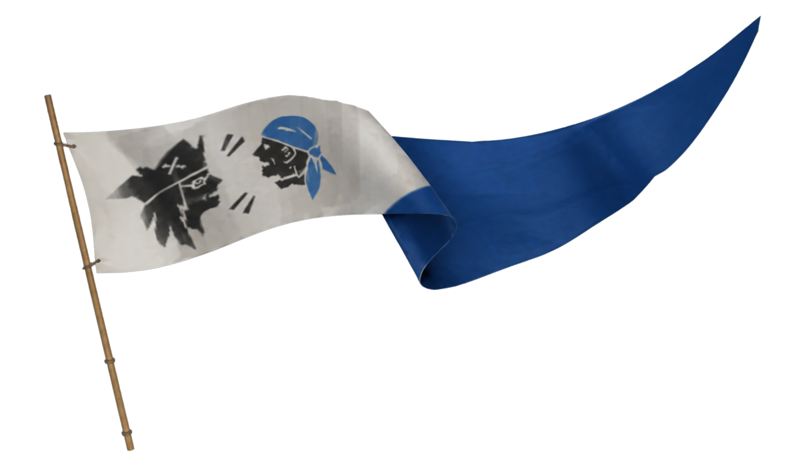
A new flag gives friendly crews a way to signal their intentions
Sea of Thieves is celebrating Talk Like a Pirate Day from September 17–22, and this year's celebration is bringing something permanent to the seas.
The new Parley Pennant will be added to every crew's Flag Box, giving pirates a way to signal that they would rather talk than immediately open fire. Of course, raising the pennant doesn't guarantee the other crew will play along — this is still Sea of Thieves, after all.
There's also a reward for pirates willing to put the new signal to the test. During the event, crews who approach three other ships while flying the Parley Pennant will unlock the Parley Proficiency Sails.
Unlike the event challenge, the pennant itself isn't going anywhere when the celebration ends. It will remain permanently available after Talk Like a Pirate Day, giving crews another way to communicate their intentions before deciding whether it's time to talk — or fight.
TAVERN RUMORS
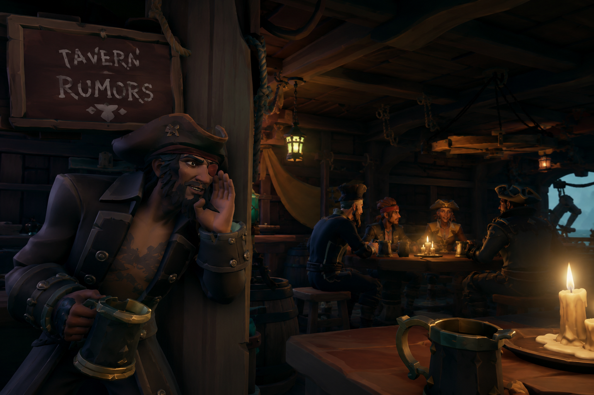
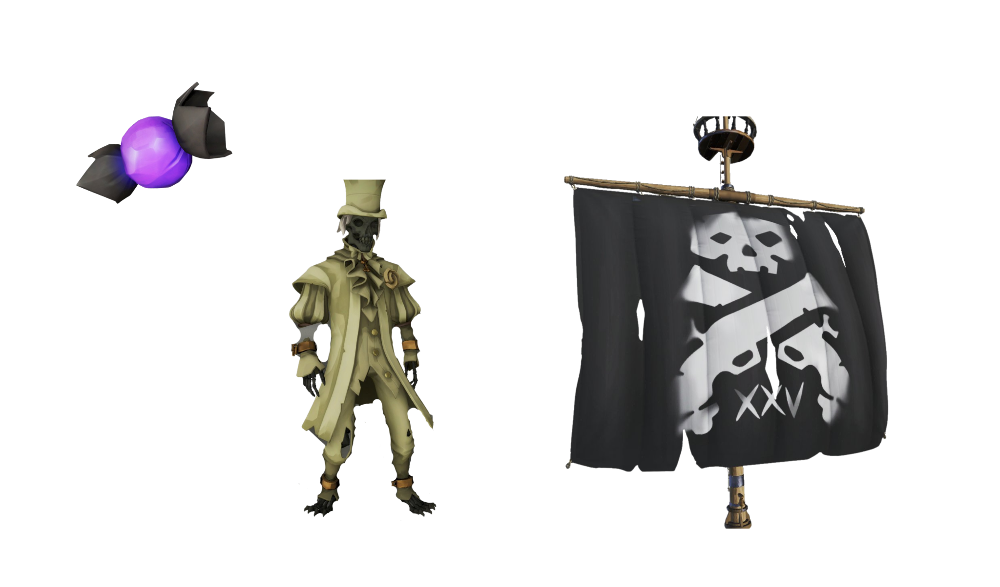
HALLOWEEN TREATS?
Rumors of this year's Halloween celebrations are already beginning to spread. Sources shared images reportedly showing a new Banshee costume and a mysterious piece of candy that pirates may be collecting during the event.
STATUS: UNCONFIRMED
REPORT VERDICT: LIKELY
25 YEARS OF XBOX
A celebration of Xbox history may soon be sailing into Sea of Thieves. A leak of what appears to be a new set of Xbox 25th Anniversary Sails, though when — and how — pirates will be able to get their hands on them remains unknown.
STATUS: UNCONFIRMED
REPORT VERDICT: LIKELY
MIDWEEK MAYHEM
Pirates still have two reasons to set sail during the week, with recurring Live Events taking over Tuesdays and Wednesdays.
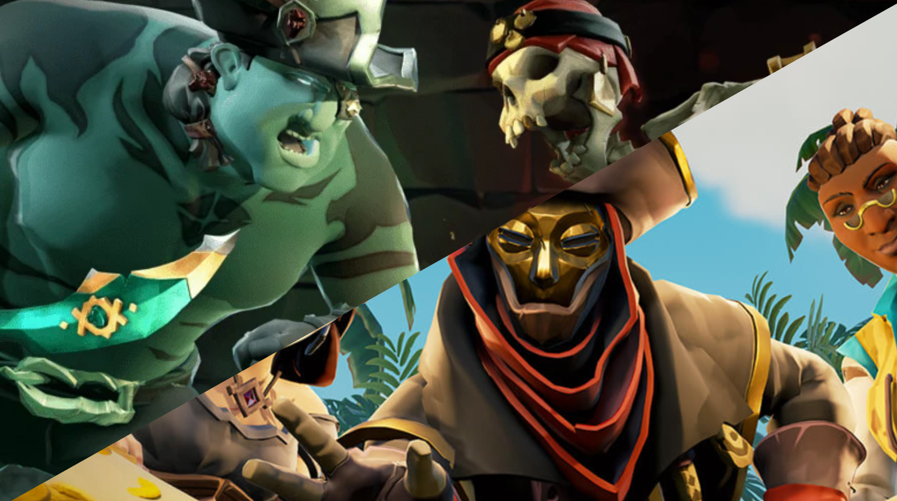
FIGHT NIGHTS — EVERY TUESDAY
Pledge to the Guardians of Fortune or Servants of the Flame and take to the Hourglass for 24 hours of increased Allegiance and gold from Faction Battles.
EMISSARIES OF FORTUNE — EVERY WEDNESDAY
Raise an Emissary Flag and climb the Grades to earn boosted rewards, regardless of which Trading Company you represent.
Both events begin at 10am UTC and run for 24 hours, giving pirates back-to-back days to chase extra rewards.
PLUNDERING THE PASS
Season 21 brings a new reward track, a new Star Prize and the Mutiny's Mark collection
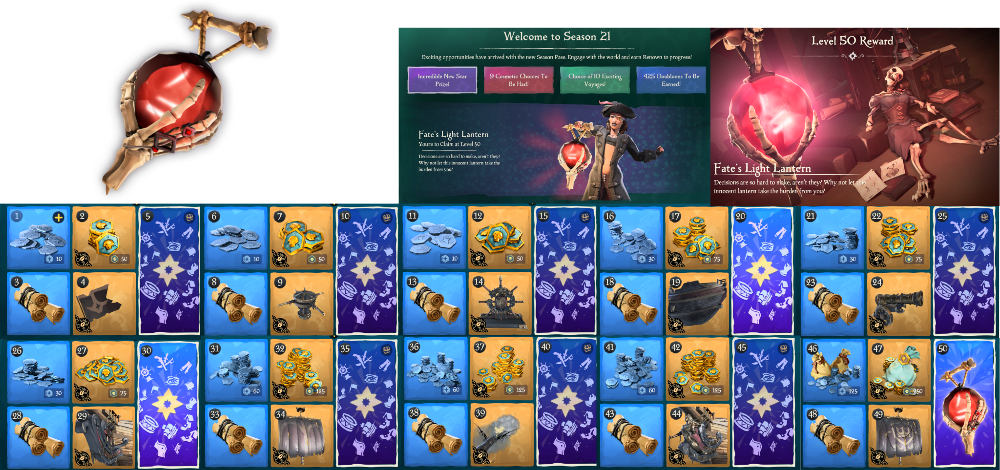
Season 21 brings another 50 levels of rewards for pirates to work through, with both the free Season Pass and an optional Premium Tier offering new cosmetics throughout the Season.
The free track once again includes rewards from the Pirate Emporium alongside gold, Doubloons, Ancient Coins and new cosmetics earned simply by raising Renown. Reaching level 50 will also unlock Season 21's new Star Prize, continuing the system introduced in Season 20.
For pirates looking for more, the Season 21 Premium Tier introduces the Mutiny's Mark collection, with pieces unlocked as players progress through the Pass.
PASS AT A GLANCE
50 Renown Levels
425 Doubloons
9 Cosmetic Choices
1 New Star Prize
10 Voyages to Choose From
THE BILGE RATS ARE BACK
Old Voyages return for a weekend of Doubloons, Ashen treasure and extra rewards
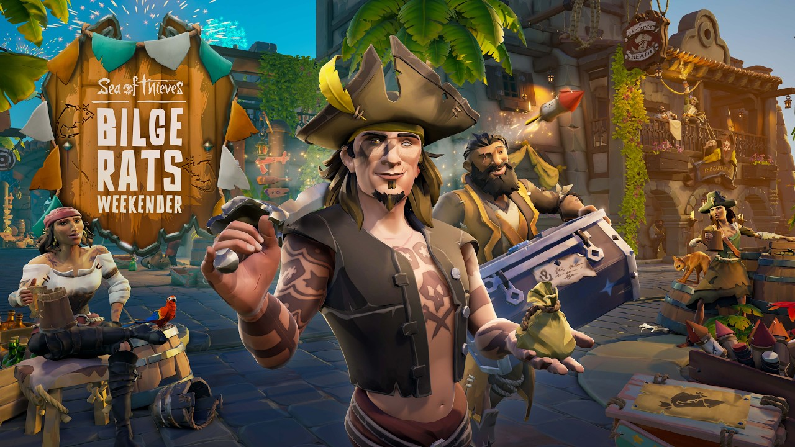
The Bilge Rats are calling pirates back into action with a special Weekender running from September 11–14, bringing a pair of familiar Voyages back to the seas for a limited time.
During the event, crews can once again take on the Smugglers' Doubloon Run and Recovery of a Secret Shipment as Special Voyages. Pirates willing to brave the Devil's Roar will also find Ashen Message in a Bottle Voyages, offering another reason to sail through the region's fiery waters.
Completing three Ashen Message in a Bottle Voyages during the Weekender will reward crews with 300 Doubloons, while Ashen treasure handed in throughout the event will earn increased Gold and Reputation.
Whether you're returning for an old Voyage or simply looking to fill your pockets, the Bilge Rats are making this a profitable weekend to set sail.
FORTUNE FAVORS THE BOLD
Gold & Glory returns September 25–28 with boosted rewards across the seas
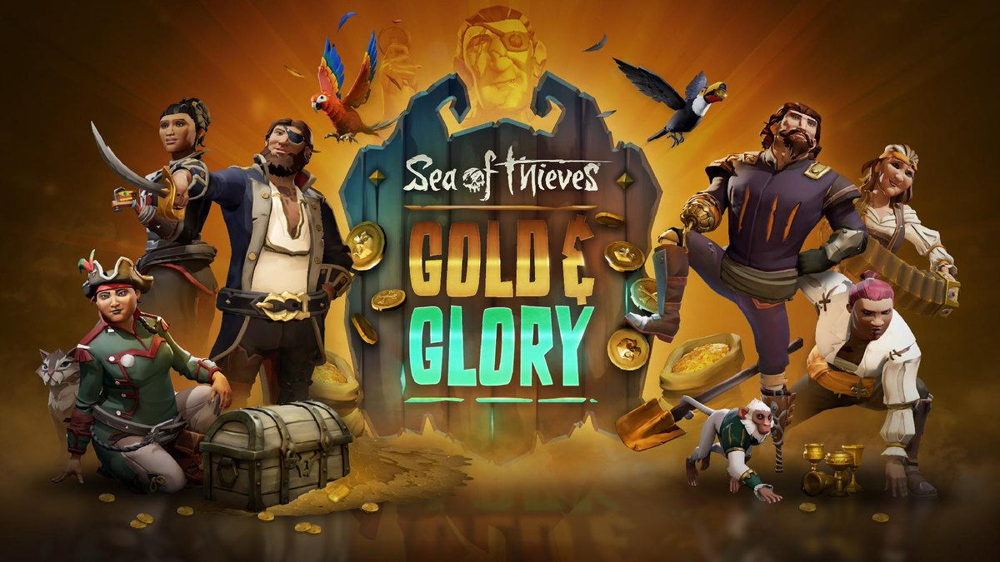
Pirates looking to end September with heavier pockets will have their chance when Gold & Glory Weekend returns from September 25–28.
Throughout the event, crews can earn increased Gold and Reputation from their adventures, alongside boosted Guild Reputation and Renown.
Hourglass fighters aren't being left out either, with increased Allegiance available for those willing to battle for their Faction.
Whether you're working through the Season 21 Pass, climbing the Emissary ranks or fighting your way through the Hourglass, it'll be one of the most rewarding weekends of the month to set sail.
MORE PIRATE PLUNDER
Extra rewards, a sale and a golden Xbox join the Talk Like a Pirate Day celebrations
The Talk Like a Pirate Day celebrations stretch beyond the new Parley Pennant, with several extra rewards and promotions appearing throughout September.
From September 18–21, the Pirate Emporium will hold a special sale with up to 30% off Captaincy items, avian pets and emotes. Xbox Game Pass subscribers can also claim the Vociferous Speaking Trumpet, while selected Microsoft Rewards Ancient Coin bundles come with the Loquacious Figurehead as a bonus.
Pirates in eligible regions can even enter a special Microsoft Rewards sweepstakes for a Golden Legends Xbox Series X and controller, along with one year of Xbox Game Pass Premium.
THE MONTH AHEAD
Mark your calendars — September is packed with reasons to set sail
SEPT. 17
🌊 Season 21 Sets Sail
🏳️ Talk Like a Pirate Day Celebrations Begin
SEPT. 18
📺 Twitch Drops Begin
🛍 Talk Like a Pirate Day Emporium Sale Begins
SEPT. 19
🦜 Talk Like a Pirate Day
SEPT. 22
🏳️ Talk Like a Pirate Day Celebrations End
SEPT. 23
📺 Twitch Drops End
SEPT. 25
💰 Gold & Glory Weekend Begins
SEPT. 28
💰 Gold & Glory Weekend Ends
EVERY TUESDAY — FIGHT NIGHTS • EVERY WEDNESDAY — EMISSARIES OF FORTUNE
COMMUNITY SPOTLIGHT
CRAFTING THE SEA OF THIEVES
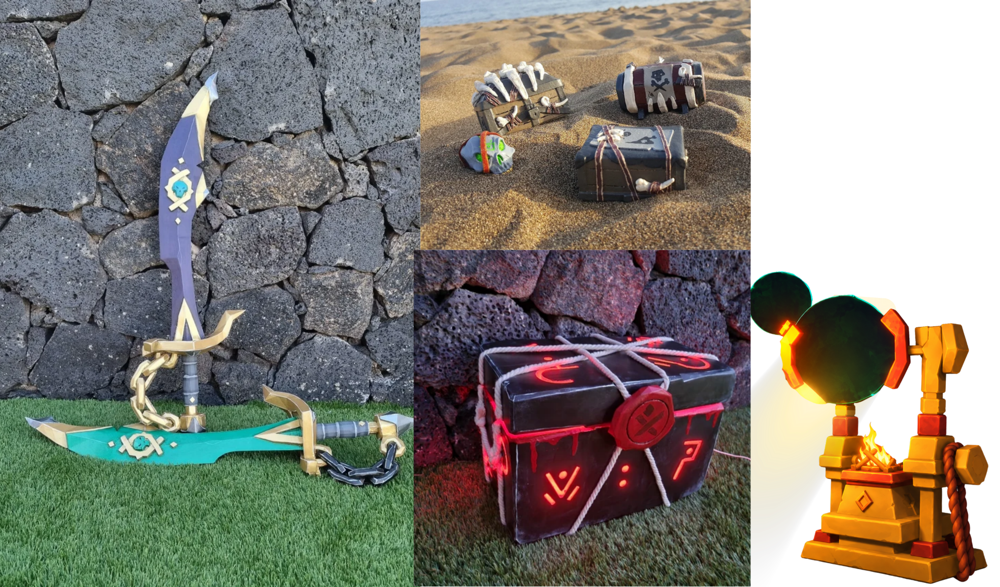
After eight years on Etsy, ChloeSaurasCrafts begins a new chapter with a shop of her own.
For years, ChloeSaurasCrafts has been a familiar name within the Sea of Thieves community, bringing items from the game into the real world through handmade props, replicas and collectibles.
But after eight years on Etsy, that chapter has unexpectedly come to an end.
Chloe recently announced that her Etsy store had been taken down after a Ferryman Flintlock prop was listed on the platform. According to Chloe, the closure came despite eight years of selling through Etsy, hundreds of five-star reviews and no previous cases against her shop.
It was a frustrating end to a storefront that had built quite the history. Before its removal, Chloe's Etsy shop had accumulated around 2,300 sales and more than 450 reviews, with creations ranging from miniature treasure chests to full-size Sea of Thieves weapon props.
Rather than let that bring her crafting voyage to an end, Chloe has decided to move on from Etsy altogether. ChloeSaurasCrafts now has a shop of its own, where she plans to continue expanding her collection and once again offer life-size weapon props alongside her other creations. Her gallery already showcases an impressive history of Sea of Thieves work, including the Ferryman set, Gilded Phoenix weapons, treasure chests, Eye of Reach replicas and even the Box of Wondrous Secrets.
For a creator who has spent years turning treasures from the Sea of Thieves into something pirates can actually hold, losing the old storefront may mark the end of one voyage — but certainly not the end of the journey.
SEASON 21: WHAT TO WATCH
The new Season is almost here — but its biggest changes may take time to judge.
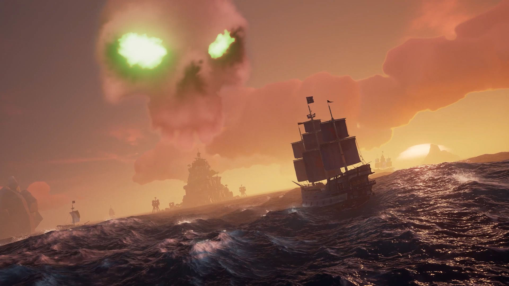
Season 21 sets sail on September 17, and while new rewards and cosmetics will immediately grab attention, some of the Season's most important changes won't be measured by what appears in the Pirate Log.
Rare's experiment with removing diving to Voyages, Tall Tales and Raids could fundamentally change how crews move around the world. The idea is simple: if pirates spend more time sailing instead of disappearing beneath the waves, servers may begin to feel more alive. The real test will be whether that creates more unexpected encounters — or simply leaves crews spending more time travelling to the adventures they wanted to play.
Rare's experiment with removing diving to Voyages, Tall Tales and Raids could fundamentally change how crews move around the world. The idea is simple: if pirates spend more time sailing instead of disappearing beneath the waves, servers may begin to feel more alive. The real test will be whether that creates more unexpected encounters — or simply leaves crews spending more time travelling to the adventures they wanted to play.
Portal Hopping will be another one to watch. Crews can still travel through the Sea of the Damned to find another server, but losing Emissary Grade in the process should make hopping a much more expensive decision. For Reapers in particular, it could mean threats develop naturally on a server instead of arriving at Grade Five without warning.
Then there's the world surrounding those experiments. Recurring Live Events are taking a larger role, Outpost stores are receiving more attention and Rare's new approach to cosmetics begins taking shape. Individually, none may transform the game overnight, but together they point toward a Season focused less on adding another enormous feature and more on changing how pirates use the world already around them. By the end of Season 21, the question may not be what Rare added — but whether the Sea of Thieves itself feels more alive.
REAPERS WATCH
DIVIDED OVER DIVING
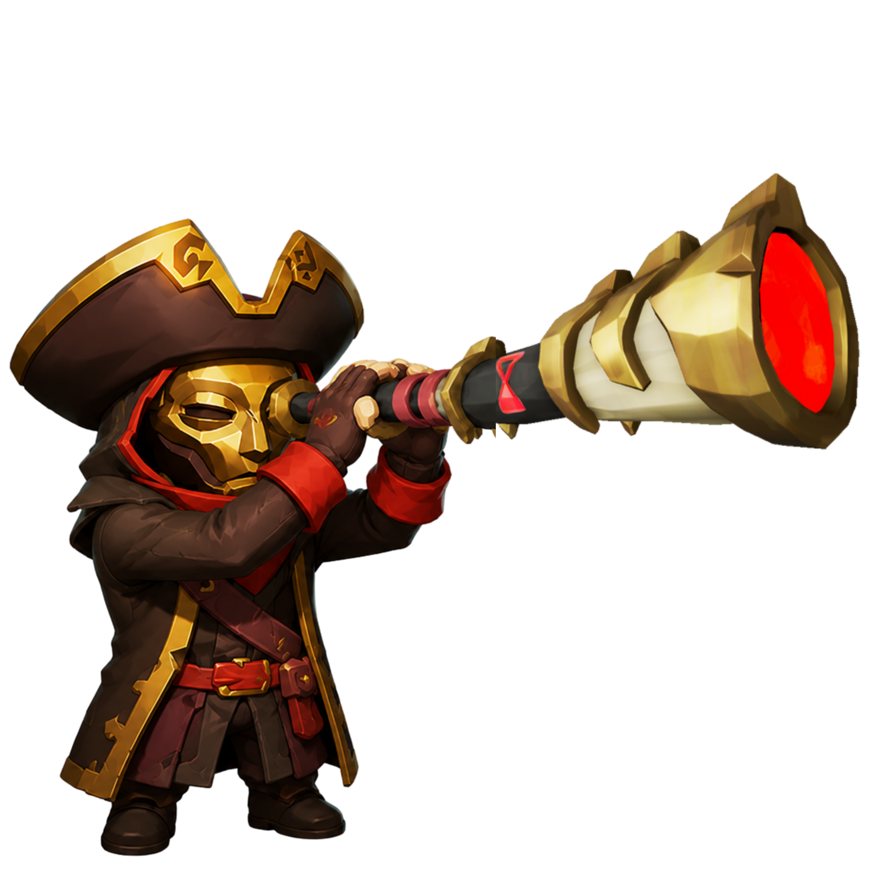
One of Season 21's biggest experiments is also becoming one of its most debated. When the new Season begins, crews will no longer be able to dive directly to Voyages, Tall Tales or Raid Voyages, forcing pirates to sail across the shared world to reach their destination.
Rare's goal is to keep ships on servers longer and encourage the unpredictable encounters that have always been at the heart of Sea of Thieves. For some players, that's exactly what Adventure has been missing.
Diving made reaching an activity faster, but it also allowed ships to disappear from a server almost instantly, potentially cutting short the stories and encounters developing around them.
Not everyone is convinced. Other pirates argue that removing diving doesn't guarantee more meaningful interactions — it may simply mean longer journeys between activities. A crew interested in completing a particular Voyage may now spend more of its session sailing there rather than actually playing it, and some question whether players who don't want an encounter will suddenly become more willing to stick around for one.
Reapers are caught directly in the middle of another part of the experiment. Portal Hopping will remain, but crews changing servers through the Sea of the Damned will lose their Emissary Grade. That means a Grade Five Reaper can no longer arrive on another server with its full Grade already established, something Rare hopes will allow threats to develop naturally within each server.
Both changes are ultimately chasing the same idea: make each server feel like a living world rather than a collection of activities crews jump between.
Whether removing one of the game's biggest shortcuts accomplishes that — or simply makes the journey longer — is something pirates won't truly know until Season 21 sets sail.
CAPTAINS LOG
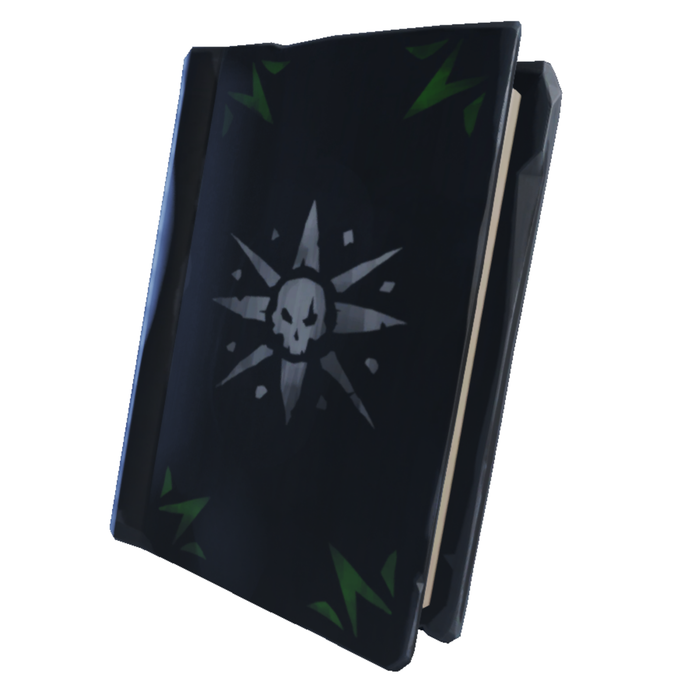
September is shaping up to be an interesting month for Sea of Thieves.
Season 21 isn't built around one massive addition, but instead a number of changes that could have a noticeable effect on how the game is played.
The removal of diving is probably the one I'm most interested to see in practice.
I understand what Rare is trying to accomplish by keeping crews on servers longer, but whether that actually leads to more player encounters or just more time spent sailing is something we'll have to see for ourselves.
This was also a bigger issue of The Captains Report than usual.
There was simply a lot worth covering this month, and I wanted to give some of these stories more room rather than trying to squeeze everything into the usual format.
I'm especially happy to start highlighting more of the community alongside the regular game news.
With Season 21 beginning September 17 and October already looking interesting, there should be plenty to talk about in the next issue.